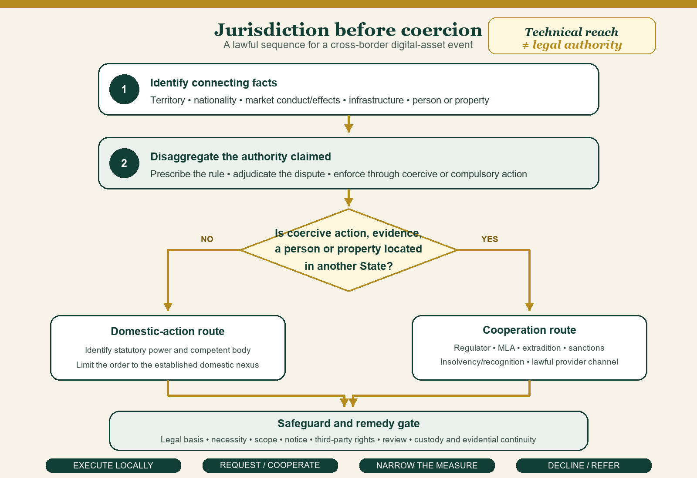

Chapter Twenty-Four · Part 6
Public International Law and Digital Assets
Chapter Summary
1
This chapter applies public international law to cross-border digital-asset activity. It distinguishes prescriptive, adjudicative and enforcement jurisdiction; examines nationality, attribution, treaties, sanctions, cyber operations, mutual legal assistance, confiscation, investment protection and CBDCs; and sets limits on unilateral extraterritorial regulation. Its central claim is that international standards and technical reach must not be confused with a lawful jurisdictional basis.
Contents
24.1 Digital Assets as an International-Law Subject
24.1.1 State interests, private systems and transnational effects
2
Digital-asset systems engage monetary stability, taxation, crime, sanctions, trade, investment, privacy and cyber resilience. Most actors and assets remain private, but states regulate persons, firms, infrastructure and effects within recognised jurisdiction. A protocol is not ordinarily an international legal person merely because it operates across borders.1
24.1.2 The limits of category-based international claims
3
There is no single international-law category called “digital asset” with uniform incidents. A CBDC, stablecoin claim, tokenised share and unbacked protocol asset present different issuers, obligations and state interests. Legal analysis should begin with conduct, person, right and connecting fact.
24.2 Sovereignty and Territorial Jurisdiction
24.2.1 Territorial links and digital infrastructure
4
Territorial jurisdiction can attach to conduct, persons, establishments, servers, intermediaries or substantial effects, depending on the rule invoked. Network distribution may multiply connections but does not make all states equally competent. Enforcement on foreign territory ordinarily requires consent or another international-law basis.2
24.2.2 Monetary sovereignty and regulatory space
5
States retain authority to define legal tender, regulate payment systems, supervise financial institutions and protect monetary stability within international obligations. Private denomination does not extinguish that authority. Measures must nevertheless comply with treaty commitments, human rights and general principles applicable to the state.
24.2.3 Cross-border stablecoins and divided regulatory links
6
Stablecoins make the jurisdictional chain especially visible. An issuer, reserve custodian, payment interface and customer may be in four states. A domestic rule can protect local customers and impose conditions on service into Pakistan, but reserve enforcement abroad depends on the governing claim, local law and cooperation. A foreign issuer's use of the dollar may create US regulatory or sanctions exposure; it does not give the United States exclusive jurisdiction over every holder dispute.
24.3 Prescriptive, Adjudicative and Enforcement Jurisdiction
24.3.1 Bases of jurisdiction
7
Territory and nationality are primary bases; protective and passive-personality principles may operate in defined circumstances, while universal jurisdiction is exceptional and offence-specific. A state claiming jurisdiction should identify the basis and a genuine connection. Customer accessibility on a global website should not automatically create unlimited worldwide jurisdiction.3
24.3.2 Comity, reasonableness and enforcement limits
8
Concurrent prescriptions can expose a platform to inconsistent duties. Comity, consultation and reasonableness can reduce conflict, but they do not erase mandatory law. Domestic orders to produce overseas records must observe the applicable statute, blocking rules, treaties and the territorial limits of coercion.4
24.3.3 Applying the jurisdictional distinctions
9
Application begins by disaggregating a cross-border event. Consider a foreign exchange used by Pakistani customers that suffers a cyber theft and later freezes withdrawals. Pakistan may have a territorial or effects connection to local marketing and loss, nationality jurisdiction over Pakistani actors, regulatory jurisdiction over service into the market, and a basis to request evidence abroad. Those connections do not authorise Pakistani investigators to seize a foreign server or compel a foreign bank inside another state without consent, treaty process or the requested state's law. Figure 24.1 later sets out the corresponding jurisdiction-and-cooperation sequence.
24.4 Nationality and Active-Personality Jurisdiction
24.4.1 Persons, corporations and beneficial ownership
10
A state may regulate its nationals abroad within international-law limits. Corporate nationality ordinarily follows legal criteria such as incorporation or seat, while beneficial ownership is relevant to control, sanctions and financial integrity but does not itself settle nationality for every purpose.5
24.4.2 Offshore conduct and state connection
11
Offshore incorporation does not remove conduct from a state's jurisdiction where nationals direct it or domestic customers, infrastructure or harm supply a statutory connection. Conversely, beneficial ownership or token possession alone should not be treated as a universal basis. The domestic statute must authorise the claimed extraterritorial reach.
24.5 State Responsibility and Attribution
24.5.1 Internationally wrongful acts
12
State responsibility requires conduct attributable to a state and breach of an international obligation.6 Technical harm, market loss or regulatory disagreement is not enough. The content and temporal application of the primary obligation must be established before remedies are considered.
24.5.2 Attribution of digital conduct and private actors
13
Conduct of state organs is attributable to the state; private conduct may be attributable in circumstances addressed by Articles 5, 8 or 11 of the ILC Articles. Funding, location or political sympathy is not necessarily direction or control. Attribution of a cyber-enabled asset theft therefore requires evidence about both the operation and the state's relationship to it.7
24.5.3 Technical and legal attribution
14
Cyber attribution requires two distinct proofs. Technical attribution links infrastructure, malware, wallets or operators to conduct. Legal attribution links that conduct to a state under the applicable rule. Confidence in one does not automatically establish the other. Public statements, countermeasures and criminal charges should communicate the evidential and legal basis appropriate to their consequence. Where facts remain uncertain, cooperation and protective action may be lawful even though a final state-responsibility claim is premature.
24.6 Treaty Obligations and International Organisations
24.6.1 Financial, trade, investment, crime and cyber instruments
15
Relevant instruments may include investment treaties, trade commitments, tax agreements, sanctions obligations, UN conventions against corruption and transnational organised crime, and cybercrime cooperation instruments.8 Each has its own parties, scope, reservations and implementation. FATF standards are not treaties.9
24.6.2 Institutional competence and domestic implementation
16
International organisations possess only conferred competence. A recommendation by one body cannot expand another's treaty mandate or directly amend Pakistani law. Domestic implementation must follow Pakistan's constitutional allocation and applicable legislation.10
17
International organisations can assist with typologies, training and coordination, but no organisation should be cited beyond its competence. FATF addresses financial-integrity standards, the FSB financial stability, and UN bodies their respective Charter or treaty mandates. Pakistan's submissions and legislation should preserve those differences. Institutional clarity strengthens the credibility of both cooperation requests and domestic action.
24.6.3 Instrument status, participation and domestic effect
18
Pakistan signed UNCAC on 9 December 2003, ratified it on 31 August 2007, and became bound on 30 September 2007. Its current depositary record contains an Article 66(3) reservation to compulsory arbitration and ICJ referral, states that UNCAC is not its legal basis for extradition, and designates NAB as the Article 46(13) central authority for English-language requests.11 Pakistan signed UNTOC on 14 December 2000, ratified it on 13 January 2010, and became bound on 12 February 2010. Its Article 35(3) reservation excludes Article 35(2); its declarations state that UNTOC is not its legal basis for extradition and designate the Ministry of Interior as the Article 18(13) central authority for English-language requests.12
19
Pakistan is not listed as a party, signatory or invited State in the current official records for the Budapest Convention on Cybercrime. It is also absent from the current Netherlands depositary list for the 2019 HCCH Judgments Convention.13 Those instruments may remain useful models or future cooperation routes, but their provisions must not be presented as present treaty obligations of Pakistan. Signature, ratification, entry into force, reservation, institutional designation and domestic implementation are separate status fields.
20
The same discipline applies to international-organisational material. A resolution, recommendation, assessment and binding Security Council decision have different effects. Pakistan should label each instrument in official registers and court submissions and identify the domestic implementing measure where one is required. Accurate status is an operational safeguard because it prevents cooperation from becoming an unsupported exercise of coercive power.
24.7 Sanctions and Countermeasures
24.7.1 Unilateral and multilateral measures
21
UN Security Council measures adopted under the Charter and unilateral national sanctions have different sources and reach.14 Countermeasures under the law of state responsibility are also distinct: they respond to a prior internationally wrongful act and are constrained by purpose, proportionality and protected obligations.15
24.7.2 Digital assets, blocking, evasion and due process
22
Digital assets can be blocked, moved through intermediaries or used in evasion. Effective controls require address and person attribution, provider obligations and review. A blockchain analytics flag is evidence, not a final legal designation; freezing and forfeiture require the relevant authority and protections for affected third parties.16
24.7.3 Designation, blocking and confiscation
23
Sanctions analysis should similarly separate designation, blocking and confiscation. A valid designation may require a regulated firm to freeze an asset and prohibit dealing. Title may remain with the designated person unless the governing law provides forfeiture. A later return, confiscation or transfer requires additional authority. A service provider should preserve the legal basis, match evidence, human decision and review record rather than make permanent deprivation depend on an address-screening score.
24.8 Cyber Operations and Digital Financial Infrastructure
24.8.1 Critical infrastructure and cross-border harm
24
Attacks on exchanges, bridges, payment systems or central-bank infrastructure may trigger domestic crime, state responsibility or, at high thresholds, Charter questions. Not every cyber incident constitutes a use of force or armed attack. The legal character depends on scale, effects, attribution and the rule invoked.17
24.8.2 State duties, cooperation and response
25
States should maintain incident response, preserve evidence and cooperate through lawful channels. Claims of a general duty to prevent every harmful transnational transaction remain contested; specific treaty, sanctions, AML and cybercrime duties provide firmer grounds. Response measures must remain necessary and proportionate.
24.9 Investigation, Mutual Legal Assistance and Extradition
24.9.1 Evidence and person-based cooperation
26
Investigators often need subscriber records, device evidence, exchange logs and testimony across borders. Mutual legal assistance, police cooperation, direct provider channels where lawful and joint investigations can assist. None supplies automatic coercive power inside another state.18
24.9.2 Speed, dual criminality and digital records
27
Digital value may move before a formal request is processed. Preservation mechanisms and emergency contacts can reduce delay, but production, admissibility and extradition remain treaty- and statute-dependent. Dual criminality concerns conduct, not identical offence names.19
24.9.3 Pakistan's cooperation-readiness package
28
The same cross-border event may generate private claims and public cooperation. Customers may sue under contract or property law; PVARA may act against a local entity or permission; FIA or another competent agency may investigate an offence; FMU channels may support financial intelligence; and a foreign insolvency representative may seek recognition. Public international law governs state-to-state authority and cooperation, while private international law allocates forum and governing law. Treating one as a substitute for the other produces overreach or remedial gaps.
29
For Pakistan, a practical international-readiness package would identify treaty and non-treaty channels, official contacts, preservation procedures, standards for incoming and outgoing requests, confidentiality, third-party rights and review. It would separately state the domestic nexus for foreign providers and the limits of administrative orders. Sections 4 and 17 of the Virtual Assets Act, 2026 expressly contemplate foreign-regulator and law-enforcement cooperation, while the Mutual Legal Assistance (Criminal Matters) Act, 2020 supplies the general statutory request machinery.20 This package would improve enforcement more than a broad declaration that all transactions involving a Pakistani are subject to Pakistani law.
30
Routing must be instrument-specific. The UNCAC depositary notice still designates NAB for Article 46 requests, whereas UNTOC designates the Ministry of Interior and the 2020 Act, as amended in 2021, defines the Secretary, Ministry of Interior, as the general statutory central authority.21 The chapter therefore records the difference and requires coordination rather than silently replacing one designation with another.
31
Public reporting can strengthen reciprocity. Competent bodies should publish aggregate data on assistance requests, preservation, restraints, returns and time to execute, while protecting investigations and personal information. Reasons for recurrent refusal—insufficient nexus, dual criminality, data-law conflict or defective process—can guide treaty and legislative improvement. Cooperation should be evaluated by lawful results, not request volume.
32
Figure 24.1 sets out the sequence from connecting facts to a lawful domestic act, foreign request or narrowed response.

24.10 Confiscation and Asset Recovery
24.10.1 Freezing, tracing and return
33
Confiscation requires a legal basis, jurisdiction over the person or property and proof under the applicable regime. UNCAC Chapter V provides a framework for international asset recovery in corruption matters; UNTOC Articles 12–14 address confiscation and international cooperation in its field.22 Private keys may make control practical; they do not establish legal title or forfeiture.
24.10.2 Third-party rights and cross-border enforcement
34
Victims, customers, secured creditors and innocent purchasers may claim the same pool. A requested state may apply its own procedure and public policy. Orders should describe the asset or value, preserve notice and challenge, and distinguish temporary freezing from final confiscation and return.23
24.10.3 Asset-recovery request design
35
Asset recovery should be integrated into a cooperation package from the beginning. A request must distinguish information, temporary preservation, freezing, confiscation and return; identify the asset or value; and disclose the relevant proceeding and third-party claims. Wallet control may allow rapid technical movement, so competent authorities need secure custody procedures. Yet speed cannot erase the requirement to document legal custody, evidential continuity and the final basis for disposition.
24.11 Investment Treaties and Investor Protection
24.11.1 Digital-asset investments and state measures
36
A digital-asset enterprise or right may qualify as an “investment” only if the applicable treaty and jurisdictional requirements are satisfied. Token ownership alone does not guarantee treaty coverage. Corporate nationality, legality of the investment, territorial nexus and consent to arbitration remain decisive. The ICSID Convention entered into force for Pakistan on 15 October 1966, but Article 25 still requires written consent to the particular class or dispute.24
24.11.2 Jurisdiction, legitimate expectations and regulatory power
37
Licensing change, prohibition or seizure may generate treaty claims, but states retain regulatory space under treaty text and general doctrine. Legitimate expectations usually require specific legal context or representations; policy optimism is not a stabilisation guarantee. Transition, reasons and due process reduce both public-law and treaty risk.
24.11.3 Transition, proportionality and review
38
Investment treaties add a further reason for calibrated transition. Abrupt revocation, discrimination or uncompensated taking may be alleged by a qualifying investor, while good-faith financial regulation remains a legitimate public function. Pakistan should preserve published conditions, reliance periods where justified, reasons, proportionality and review. These practices protect domestic legality whether or not a treaty ultimately applies. Pakistan's Arbitration (International Investment Disputes) Act, 2011 implements the ICSID framework domestically but does not dispense with treaty, nationality, investment and consent requirements.25
24.12 CBDCs, Monetary Sovereignty and Human Rights
24.12.1 State digital currency and cross-border systems
39
CBDCs are central-bank liabilities governed by public monetary law. Cross-border use requires decisions about access, foreign-exchange control, settlement, data and monetary spillovers. A technical bridge cannot allocate these sovereign responsibilities.
40
CBDC cooperation should be developed through explicit institutional arrangements. Cross-border settlement raises access to central-bank liabilities, foreign-exchange management, operating hours, cyber responsibility, data localisation, failure and dispute questions. A common technical platform cannot decide monetary allocation. Each central bank and participating state must approve the relevant legal and operational terms.
24.12.2 Privacy, property, equality and access
41
CBDC and supervisory systems may affect privacy, expression, equality, property interests and access to essential services. The ICCPR protects privacy, expression and equality, though it contains no general property clause. Pakistan signed the Covenant on 17 April 2008, ratified it on 23 June 2010 and became bound on 23 September 2010. Its surviving reservations concern Articles 3 and 25, not Articles 17, 19 or 26 used here.26 Design should minimise data, separate functions, authorise access and provide human review and remedies.
42
Human rights should operate throughout, not only in CBDC design. Financial surveillance and account restriction can affect privacy, expression, equality, livelihood and procedural fairness. Restrictions may be justified for crime prevention or financial stability, but must have a legal basis and be necessary and proportionate under the applicable standard. Cross-border cooperation should not be used to evade protections that would apply to domestic action.27
24.13 Limits of Unilateral Extraterritorial Regulation
24.13.1 Overreach, conflict and fragmentation
43
States can project rules through reserve currencies, app stores, banks and global platforms. Economic leverage is not a complete legal justification. Overbroad claims invite conflicting orders, data-law breaches and market fragmentation, particularly where every state treats remote accessibility as domestic operation.
24.13.2 Cooperation and principled jurisdiction
44
A principled order identifies a substantial connection, states extraterritorial scope, coordinates with affected authorities and limits remedies to what can lawfully be enforced. Pakistan should combine local customer protection with treaties, assistance arrangements and conflict rules rather than claim control over a borderless network. Table 24.1 summarises the recurring bases, limits and cooperative routes.
| Cross-border issue | Possible legal basis | Limit requiring discipline | Cooperative route |
|---|---|---|---|
| Foreign platform serving Pakistani customers | Territorial conduct/effects and statutory market nexus | Domestic statute must state scope; accessibility alone is insufficient | Host-regulator contact, records request, local conditions or orderly exit |
| Overseas records | Domestic investigation plus production power | Coercive enforcement abroad requires consent or foreign process | Mutual legal assistance, preservation request or lawful provider channel |
| Sanctioned wallet | Applicable UN or domestic sanctions instrument | Analytics attribution is not designation; freeze is not always confiscation | Competent-authority exchange and reasoned review |
| State-linked cyber theft | Crime law and potentially state responsibility | Technical actor attribution and legal state attribution are separate | Incident cooperation, evidence preservation, diplomatic or treaty channels |
| Foreign insolvency holding customer assets | Domestic recognition law and private rights | Public cooperation does not decide customer title | Court/office-holder protocol and asset-specific relief |
| Foreign civil or commercial judgment | Domestic recognition law, bilateral arrangements or an applicable convention | Pakistan is not presently a party to the 2019 HCCH Judgments Convention | Recognition proceedings under applicable domestic or bilateral law |
24.13.3 Reciprocity and emergency limits
45
The final public-international-law test is reciprocity of principle. Pakistan may object when foreign states regulate remote conduct on a thin connection; it should apply a disciplined nexus to its own claims. It may seek rapid foreign preservation; it should offer lawful channels and rights when responding. A digital-asset order that treats sovereignty, cooperation and due process consistently will be more enforceable abroad and more legitimate at home.
46
That discipline should survive emergency conditions. Urgency may justify preservation or interim restraint where legislation permits, but not an invented jurisdictional basis or permanent deprivation without process. Recorded authority, necessity, duration and review make rapid digital-asset action both more defensible and more likely to receive cooperation abroad.
Chapter 24 Conclusion
47
Public international law remains fully relevant to digital assets. It disciplines the leap from technical reach to legal authority and distinguishes domestic regulation, international obligation and cooperation. The durable method is connection, competence, attribution, process and remedy—not the assertion that decentralisation makes every state powerless or universally competent.
Chapter 24 Authorities and Footnotes
48
Authorities are supplied as true page footnotes at the propositions they support.
Footnotes
- ↑ Reparation for Injuries Suffered in the Service of the United Nations, Advisory Opinion, I.C.J. Reports 1949, pp 174, 178–180 (international personality and powers of an organisation arise from its constituent functions and necessary implication).
- ↑ Charter of the United Nations arts 2(1), 2(4) and 2(7); S.S. “Lotus”, Judgment No 9, P.C.I.J. Series A No 10 (7 September 1927), pp 18–19 (a State may not exercise coercive power in another State's territory without a permissive rule).
- ↑ S.S. “Lotus”, P.C.I.J. Series A No 10, pp 18–20; United Nations Convention against Transnational Organized Crime (UNTOC), art 15 (treaty example of territorial, flag, nationality, protective and passive-personality jurisdictional bases).
- ↑ S.S. “Lotus”, P.C.I.J. Series A No 10, p 18; Mutual Legal Assistance (Criminal Matters) Act, 2020 (Pakistan), ss 3–9 and 19–20.
- ↑ Nottebohm (Liechtenstein v Guatemala), Second Phase, Judgment, I.C.J. Reports 1955, pp 20–23; Barcelona Traction, Light and Power Company, Limited (Belgium v Spain), Second Phase, Judgment, I.C.J. Reports 1970, paras 70–71.
- ↑ International Law Commission, Articles on Responsibility of States for Internationally Wrongful Acts (2001) (ILC Articles), arts 2 and 12–15, annexed to UN General Assembly resolution 56/83 of 12 December 2001.
- ↑ ILC Articles, arts 4, 5, 8 and 11; see also the commentaries to art 8 on direction or control of private conduct.
- ↑ United Nations Convention against Corruption (UNCAC), adopted 31 October 2003, 2349 UNTS 41; UNTOC, adopted 15 November 2000, 2225 UNTS 209. The legal effect for Pakistan depends on the treaty text, Pakistan's entry into force and its reservations/declarations.
- ↑ Financial Action Task Force, International Standards on Combating Money Laundering and the Financing of Terrorism & Proliferation: The FATF Recommendations (official standards, as amended). The Recommendations are institutional standards, not treaties and not self-executing amendments to Pakistani law.
- ↑ Reparation for Injuries, I.C.J. Reports 1949, pp 178–180. Compare the constitutive instrument and mandate of the organisation actually relied upon.
- ↑ UN Treaty Collection, UNCAC status and Pakistan notices: signature 9 December 2003; ratification 31 August 2007; entry into force 30 September 2007; reservation under art 66(3); declarations under arts 44(6) and 46(13)–(14).
- ↑ UN Treaty Collection, UNTOC status and Pakistan notices: signature 14 December 2000; ratification 13 January 2010; entry into force 12 February 2010; reservation under art 35(3); declarations under arts 16(5) and 18(13)–(14).
- ↑ Council of Europe Treaty Office, Convention on Cybercrime (ETS No 185), chart of signatures and ratifications, status checked 28 August 2026; Council of Europe, parties and observers list; Ministry of Foreign Affairs of the Kingdom of the Netherlands, depositary parties table for the HCCH 2019 Judgments Convention, checked 28 August 2026. Pakistan appears in neither instrument's current party/signatory list.
- ↑ Charter of the United Nations arts 25 and 41; United Nations (Security Council) Act, 1948 (Pakistan), s 2.
- ↑ ILC Articles, arts 22 and 49–54 (object, temporary character, proportionality, prior demand/notice and protected obligations governing countermeasures).
- ↑ United Nations (Security Council) Act, 1948 (Pakistan), as amended; United Nations Security Council (Freezing and Seizure) Order, 2019; UN Charter arts 25 and 41. A freeze or seizure order should not be treated as a final transfer of title without the further authority required by the governing regime.
- ↑ Charter of the United Nations arts 2(4), 39–41 and 51. The Charter classifications must be assessed separately from domestic cybercrime and state-responsibility analysis.
- ↑ UNCAC art 46; UNTOC art 18; Mutual Legal Assistance (Criminal Matters) Act, 2020 (Pakistan), ss 3–9. Each route preserves the requested State's authority over coercive execution.
- ↑ Mutual Legal Assistance (Criminal Matters) Act, 2020 (Pakistan), ss 19–20 (expedited preservation; production, search and seizure of information systems); Pakistan's UNTOC declaration under art 16(5) and UNCAC declaration under art 44(6) (neither Convention is taken as Pakistan's legal basis for extradition).
- ↑ Virtual Assets Act, 2026 (Pakistan), Act XIII of 2026, ss 1, 4 and 17; Mutual Legal Assistance (Criminal Matters) Act, 2020, ss 3–9 and 19–20.
- ↑ UN Treaty Collection, Pakistan notices under UNCAC art 46(13) and UNTOC art 18(13); Mutual Legal Assistance (Criminal Matters) Act, 2020, s 2(c), substituted by Act XI of 2021.
- ↑ UNCAC art 31 and ch V (arts 51–59); UNTOC arts 12–14.
- ↑ Mutual Legal Assistance (Criminal Matters) Act, 2020 (Pakistan), ss 13–14; UNCAC arts 31, 54–57; UNTOC arts 12–14.
- ↑ Convention on the Settlement of Investment Disputes between States and Nationals of Other States (ICSID Convention), art 25; ICSID, Pakistan member-state record (Convention in force 15 October 1966; no art 25(4) notification recorded). Membership alone is not consent to arbitrate.
- ↑ Arbitration (International Investment Disputes) Act, 2011 (Pakistan), Act IX of 2011; ICSID Convention arts 25, 54 and 69.
- ↑ International Covenant on Civil and Political Rights (ICCPR), arts 17, 19 and 26; UN Treaty Collection, Pakistan status: signature 17 April 2008, ratification 23 June 2010, entry into force 23 September 2010; withdrawal/modification of reservations notified 20 September 2011, leaving modified reservations to arts 3 and 25.
- ↑ Human Rights Committee, General Comment No 16, Article 17 (Right to Privacy) (1988), especially paras 1, 3–4, 7–8 and 10; General Comment No 34, Article 19: Freedoms of Opinion and Expression, CCPR/C/GC/34 (2011), especially paras 22–36; ICCPR art 2(3) on effective remedy.